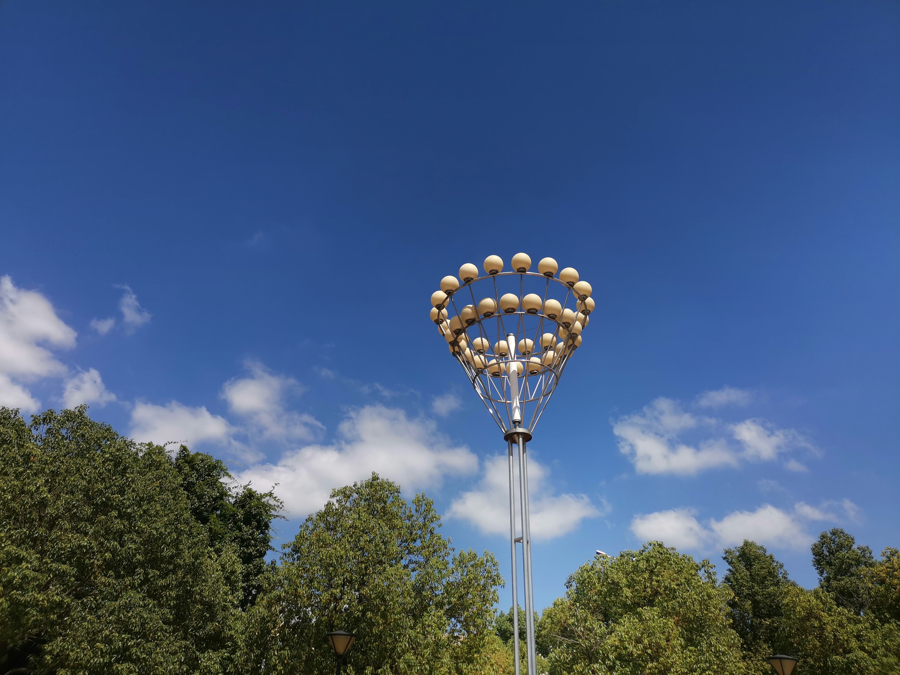
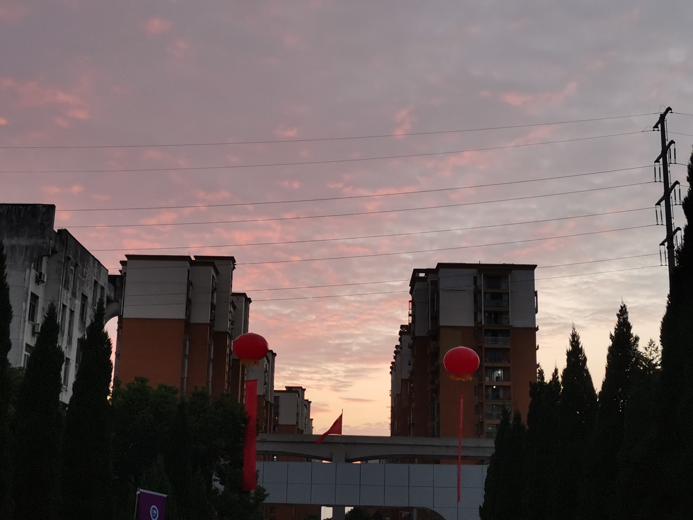
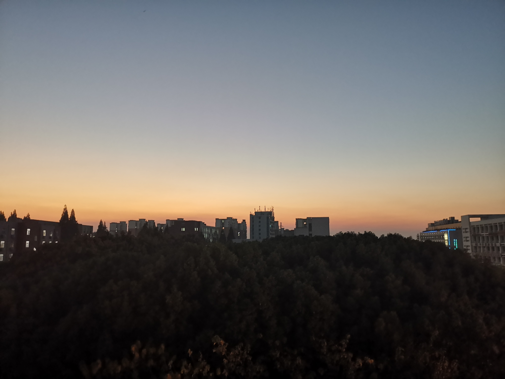

我的大学生活
当雪已经落满京城的时候，芜湖尚是秋天，而我也在芜职等着在芜湖的第三场初雪。只是第三场初雪，我可能已经不能在芜职的校园里看了，毕竟如今我已经在准备毕业的事了。
回想这三年，
在思惟品德上:
本人有优越道德教养，并有果断的政治偏向，我积极地向党组织靠拢，使我对我们党有更为深刻的熟悉。本人遵纪守法、爱护公共家当、关心和赞助他人，并以务实求真的精神热情介入学校的公益宣传和爱国活动。

在生活上:
我最大的特点是诚实守信，热情待人，勇于挑战自我，时间观念强，有着优越的生活习惯和正派作风。

在工作上:
对工作热情，任劳任怨，责任心强，身为学生的我在修好学业的同时也重视于社会实践。本着学以致用的精神，实践结合理论发挥作用。

在芜职的日子里
我看过很多的书
遇到过很多的人
还听过很多的歌
走过很长的路
我知道，在未来的日子里我会看更多的书，遇更多的人，听更多的歌，走更长的路，但是，芜职，我来过，这三年，我活过。